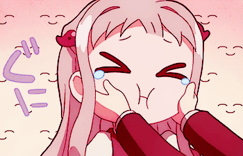

Explorando as Marcas Especiais "Tenten" (゛) e "Maru" (゜) no Hiragana
Por: Augusto, 09 de outubro de 2023.

Na língua japonesa, além das letras básicas do hiragana, existem algumas marcas especiais que podem modificar a pronúncia de certos caracteres. Vamos explorar como essas marcas funcionam e como elas afetam a pronúncia.
A Marca "Tenten" (゛)
A marca "tenten" é usada para modificar a pronúncia de certas consoantes no hiragana, especificamente as consoantes K, S, T e H. Ela é representada pelo símbolo "゛" e é colocada acima dessas consoantes para indicar que o som da consoante é dobrado ou soa mais enfatizado. Veja exemplos abaixo:
か (ka)
が (ga)
さ (sa)
ざ (za)
た (ta)
だ (da)
は (ha)
ば (ba)
ひ (hi)
び (bi)
ふ (fu)
ぶ (bu)
へ (he)
べ (be)
ほ (ho)
ぼ (bo)
Observe como a adição do "tenten" muda a pronúncia das consoantes, tornando-as mais enfatizadas. Isso é semelhante a adicionar um som de "b" ao som original das consoantes.
A Marca "Maru" (゜)
A marca "maru" é usada para modificar a pronúncia da consoante "は" (ha) no hiragana. Ela é representada pelo símbolo "゜" e é colocada acima da consoante "は" para indicar que o som da consoante é suavizado ou mais leve, transformando-a em "ぱ" (pa). Veja o exemplo abaixo:
は (ha)
ぱ (pa)
Observe como a adição do "maru" muda a pronúncia da consoante "は", tornando-a mais suave. Isso é semelhante a adicionar um som de "p" ao som original da consoante.
Praticando com "Tenten" e "Maru"
Para se familiarizar com o uso de "tenten" e "maru", é importante praticar a leitura e a escrita desses caracteres. Você pode encontrar tabelas de hiragana que incluem letras com "tenten" e "maru" para praticar. Lembre-se de que o contexto em que essas marcas são usadas é crucial para determinar a pronúncia correta.
As regras de uso de "tenten" e "maru" são importantes para a pronúncia adequada do hiragana, e a prática regular ajudará você a se tornar mais proficiente na língua japonesa.
Material de Apoio
Para uma compreensão mais aprofundada das marcas "Tenten" e "Maru" no hiragana, você pode baixar o material de apoio em formato PowerPoint aqui: